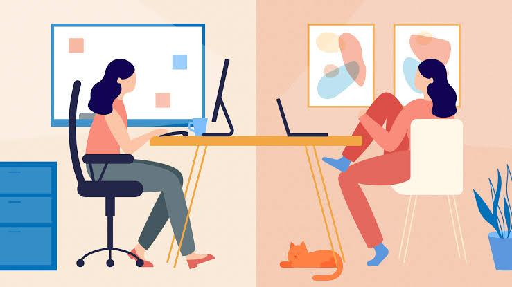
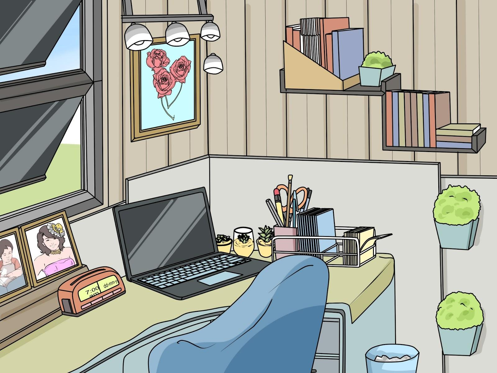

The proliferation of the Internet has changed the way Canadians work - it has provided them the flexibility to work off-site or even from home. The large office buildings have the potential of becoming irrelevant as the “new office” is now the “out-of-office.”
We have to carefully watch this trend to see how it will take hold post-pandemic. For many workers, how they have done their jobs in the past will be changing as technology is fast changing.
|
The Influence of Technology on Work Competition for employment has increased for people entering the workforce. It has been the case nowadays that people looking for jobs are no longer competing with other workers in the same geographic areas, but they now also compete for employment on a global scale. Talented and qualified workers no longer gravitate towards a certain area for a chance to use their skills to create cutting-edge technology. The advancements in Internet technology have allowed workers to be anywhere in the world and still be part of a project. This is the power of telecommuting, where talents of the best and the brightest in a field can be used to create a product, wherever s/he is located. Its foremost requirement is being computer literate.  Telecommuting is the idea of working from home or another off-site location through the use of internet-connected devices such as computers and fax machines.
|
|
The Home Office  As the number of telecommuters increase, the people’s homes have become their workplaces. Even as interesting as it may sound, working from home also poses some challenges for the workers.
On a positive note, increasing efficiency for telecommuters can also be accomplished in a number of ways, depending on the worker’s discipline and self-control. This may include setting up a dedicated room as home office, creating a schedule for the day, or a daily to-do-list. |
Adapting to the New Workplace
Adapting to the new work environment requires a shift in thought. Using the theory of constructivism developed by Swiss psychologist Jean Piaget (1896-1990), workers actively seek to make sense of their new workplace by applying constructs - or categories used to evaluate phenomena and provide meaning to the world around them.
Workers must adapt their constructs to meet the changing workplace.
For example is the original construct of job competition which used to be limited to people within the same geographic area, but the changing reality could be that the company requires specialists from around the world armed with skills not possessed by the local applicants.
The Growing Value of Social Media
An international study was reported by Cisco Connected World Technology Report about 2800 college students in 14 countries.
Though it was done in 2011, the results still hold today more than ever where it found that the next generation of employees will be significantly influenced by the access to and use of technologies in the workplace when searching for a job.
The report noted that one in three college students would prioritize social media freedom, device flexibility, and work mobility over the expectation of a higher salary. These findings are reflective of the importance of social media devices and technology to the next generation entering the workforce.